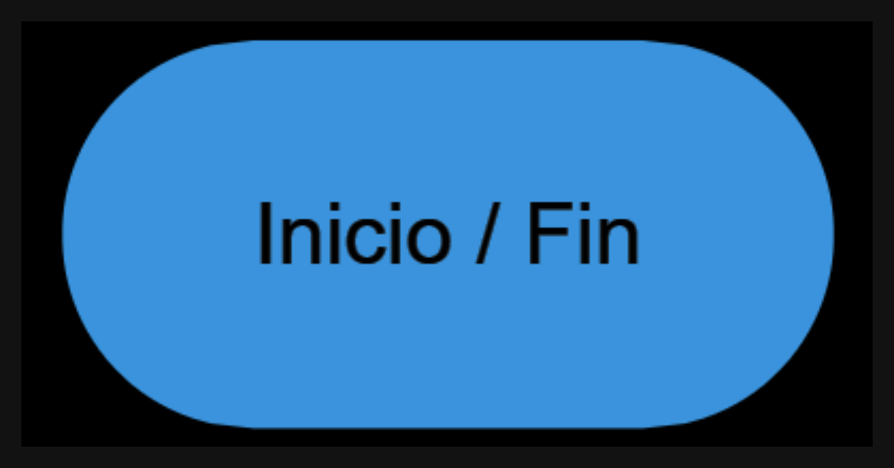
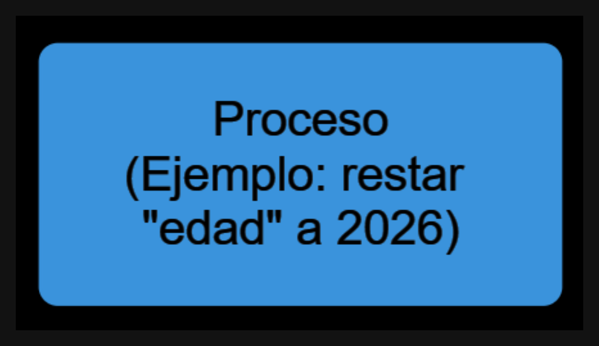
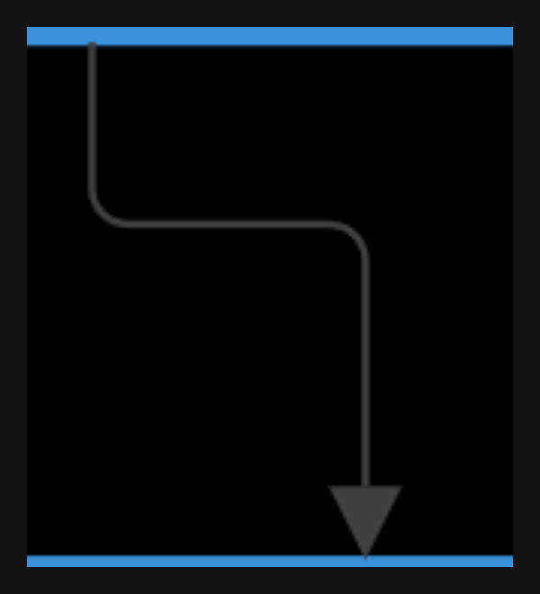
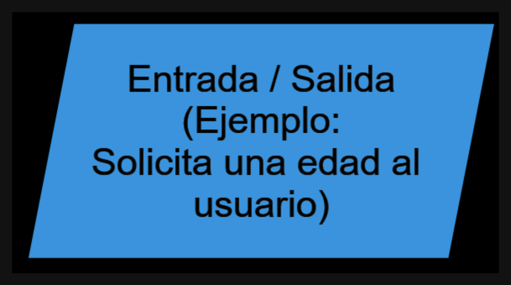
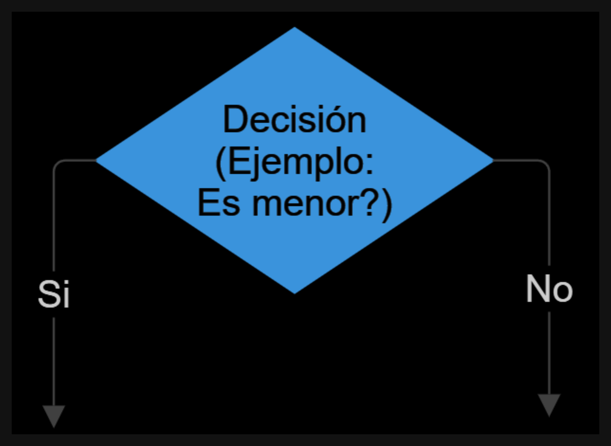
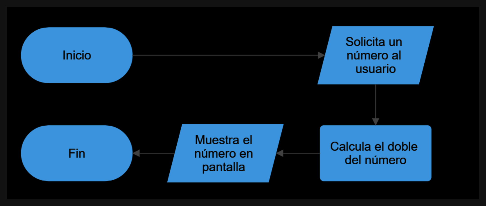
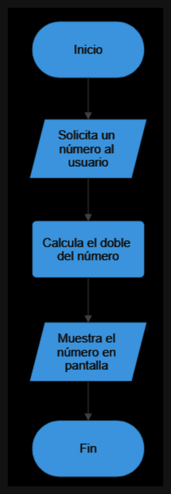
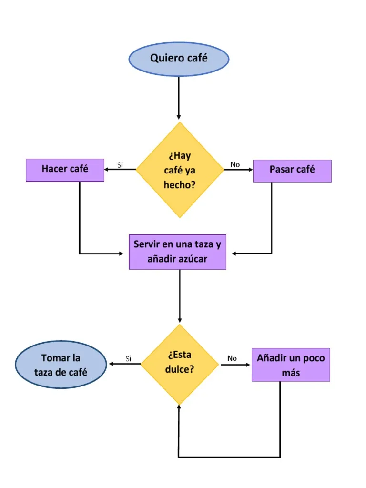

🧠 Pensar como una computadora
Antes de aprender un lenguaje de programación, primero necesitamos aprender cómo piensan las computadoras.
Las computadoras no entienden ideas generales ni interpretaciones. Solo pueden seguir instrucciones claras, precisas y ordenadas.
Por eso, programar no empieza escribiendo código. Empieza aprendiendo a explicar un proceso paso a paso.
🧑💻 ¿Qué es programar?
Programar es el proceso de diseñar y escribir algoritmos que una computadora puede ejecutar para realizar tareas específicas.
Es una forma de comunicarnos con las máquinas para que realicen acciones, procesen datos o resuelvan problemas.
Todos alguna vez programamos, aunque no lo hayamos llamado así.
Por ejemplo:
- Al usar un microondas, le damos instrucciones para calentar la comida.
- Al seguir una receta de cocina, seguimos una serie de pasos ordenados.
- Al explicar cómo llegar a un lugar, describimos una secuencia de acciones.
En todos esos casos estamos describiendo un procedimiento.
Eso es exactamente lo que hace un programador.
🧾 ¿Qué es un algoritmo?
Un algoritmo es un conjunto de instrucciones ordenadas, finitas y no ambiguas que describen cómo resolver un problema o realizar una tarea.
Un buen algoritmo tiene tres características importantes:
Ordenado
Los pasos deben ejecutarse en una secuencia lógica.
Finito
Debe tener un final. No puede continuar para siempre.
Preciso
Cada paso debe ser claro y no admitir varias interpretaciones.
Ejemplo de algoritmo
Problema: preparar un mate
Algoritmo:
- Agarrar un mate
- Colocar yerba hasta 3/4 del recipiente
- Calentar agua
- Insertar la bombilla
- Verter agua caliente
- Beber de la bombilla
Este algoritmo describe una forma posible de resolver la tarea.
En programación, muchas veces existen varios algoritmos distintos para resolver el mismo problema.
✍️ Ejercicio 1 — Algoritmos de la vida cotidiana
Escribí un algoritmo paso a paso para las siguientes tareas.
Intentá ser lo más preciso y detallado posible.
1️⃣ Lavarse los dientes
Escribí cada paso necesario desde el principio hasta el final.
2️⃣ Preparar un sandwich
Incluí todos los pasos necesarios.
3️⃣ Encender una computadora
Describí el proceso completo.
4️⃣ Enviar un mensaje de WhatsApp
Pensá cada acción que realiza el usuario.
🧩 Del algoritmo al pseudocódigo
Cuando los algoritmos se vuelven más complejos, escribirlos en lenguaje natural puede volverse confuso.
Por eso se utiliza pseudocódigo.
El pseudocódigo es una forma de escribir algoritmos usando una estructura parecida a la programación, pero sin depender de un lenguaje específico.
Es una forma de representar la lógica de un programa de manera clara.
Ejemplo de pseudocódigo
Problema: calcular la edad de una persona.
INICIO
leer añoNacimiento
edad = 2026 - añoNacimiento
mostrar edad
FIN
En este ejemplo aparecen tres tipos de acciones comunes:
leer
Permite ingresar un dato.
mostrar
Permite mostrar información al usuario.
asignación
Permite guardar un valor en una variable.
edad = 2026 - añoNacimiento
Esto significa:
guardar en la variable edad el resultado de la operación.
Una variable es un espacio de memoria RAM que se utiliza para almacenar datos.
✍️ Ejercicio 2 — Escribir pseudocódigo
Escribí el pseudocódigo para resolver los siguientes problemas.
1️⃣ Calcular el doble de un número
El programa debe:
- pedir un número
- calcular su doble
- mostrar el resultado
2️⃣ Saludar a una persona
El programa debe:
- pedir el nombre
- pedir la edad
- mostrar el mensaje
Hola [nombre], tenés [edad] años
3️⃣ Calcular el precio final con IVA
El programa debe:
- pedir el precio de un producto
- calcular el precio final con 21% de IVA
- mostrar el resultado
📊 Diagramas de flujo
Otra forma de representar algoritmos es mediante diagramas de flujo.
Un diagrama de flujo utiliza símbolos gráficos para representar los pasos de un proceso.
Esto permite visualizar el algoritmo de forma más clara.
Símbolos básicos
Inicio / Fin
Óvalo

Representa el comienzo o el final del algoritmo.
Proceso
Rectángulo

Representa una operación o cálculo.
Flujo
Flecha

Indica la dirección del flujo del algoritmo.
Entrada / Salida
Paralelogramo

Se utiliza para leer o mostrar datos.
Decisión
Rombo

Representa una pregunta que puede tener diferentes caminos.
Ejemplo de algoritmo en diagrama de flujo
Problema: calcular el doble de un número.
Pasos del algoritmo:
- Inicio
- Leer número
- Calcular doble
- Mostrar resultado
- Fin
Este mismo proceso puede representarse gráficamente mediante un diagrama de flujo de esta manera:

Otra forma de organizarlo sería:

Otro ejemplo también válido sería:


✍️ Ejercicio 3 — Crear diagramas de flujo
Dibujá el diagrama de flujo para los siguientes problemas.
1️⃣ Área de un rectángulo
El programa debe:
- leer base
- leer altura
- calcular área
- mostrar resultado
Recordá:
área = base × altura
2️⃣ Conversión de temperatura
Convertir grados Celsius a Fahrenheit.
La fórmula es:
F = C × 9 / 5 + 32
3️⃣ Promedio de tres notas
El programa debe:
- leer tres notas
- calcular el promedio
- mostrar el resultado
🧠 Desafío final
Una tienda necesita calcular el precio total de una compra.
Datos necesarios:
- precio del producto
- cantidad comprada
- IVA del 21%
El sistema debe calcular el precio final de la compra.
Realizá tres representaciones del problema:
1️⃣ Algoritmo en pasos
2️⃣ Pseudocódigo
3️⃣ Diagrama de flujo
💡 Concepto importante
Los lenguajes de programación cambian constantemente.
Hoy existen muchos:
- Python
- Java
- C#
- JavaScript
- Kotlin
Pero todos tienen algo en común.
Antes de escribir código, siempre existe un algoritmo.
Aprender a programar es, en gran parte, aprender a pensar los problemas de forma lógica y ordenada.
Un buen programador no solo sabe escribir código.
También sabe analizar problemas y transformarlos en pasos claros, eficientes y reutilizables que una máquina pueda ejecutar.
🧠 Ejercicios adicionales
1️⃣ Número par o impar
Crear un programa que:
- pida un número al usuario
- determine si el número es par o impar
- muestre el resultado
Pista conceptual: un número es par si el resto de dividirlo por 2 es 0.
2️⃣ Número mayor
El programa debe:
- pedir dos números
- determinar cuál es el mayor
- mostrar el resultado
3️⃣ Calculadora básica
Crear un programa que:
- pida dos números
-
calcule:
-
suma
- resta
- multiplicación
- muestre los resultados
4️⃣ Edad de una persona
El programa debe:
- pedir el año de nacimiento
- calcular la edad actual
- mostrar la edad
5️⃣ Promedio de cuatro notas
El programa debe:
- pedir 4 notas
- calcular el promedio
- mostrar el resultado
6️⃣ Conversión de minutos a horas
El programa debe:
- pedir una cantidad de minutos
- convertirla a horas
- mostrar el resultado
Ejemplo: 120 minutos → 2 horas
7️⃣ Área de un triángulo
El programa debe:
- pedir base
- pedir altura
- calcular el área
- mostrar el resultado
La fórmula es: Área = (base × altura) / 2
8️⃣ Precio total de compra
El programa debe:
- pedir precio de un producto
- pedir cantidad
- calcular el total a pagar
- mostrar el resultado
9️⃣ Descuento en una compra
El programa debe:
- pedir el precio de un producto
- calcular el precio con 10% de descuento
- mostrar el precio final
🔟 Conversión de kilómetros a metros
Crear un algoritmo que:
- pida la edad de una persona
- determine si es mayor de edad
- muestre el resultado ("Es mayor de edad" o "No es mayor de edad")
Regla:
Mayor de edad → 18 años o más
(Ayuda para pseudocódigo: mayor -> " > " , menor -> " < ", igual -> " == " )